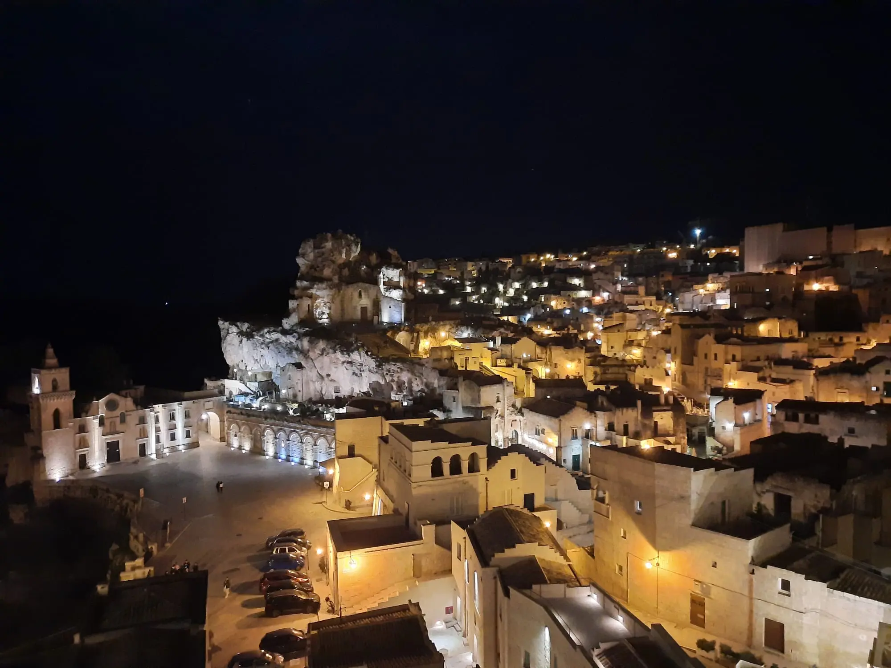
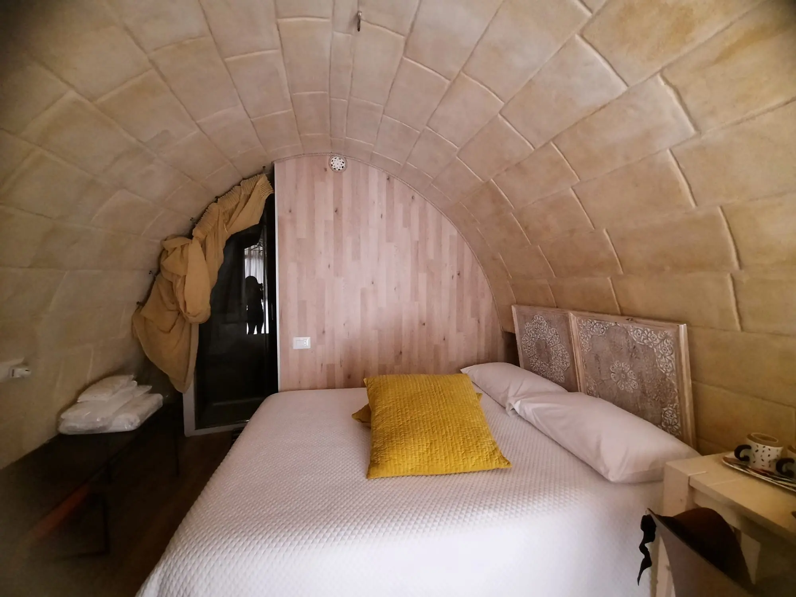
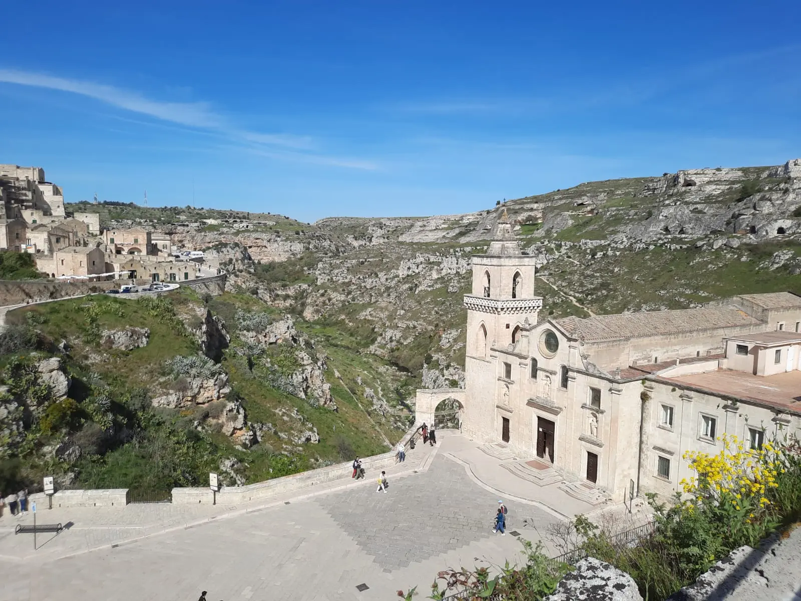
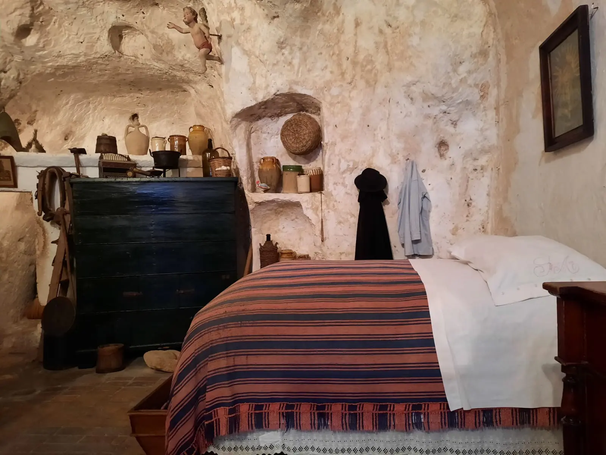
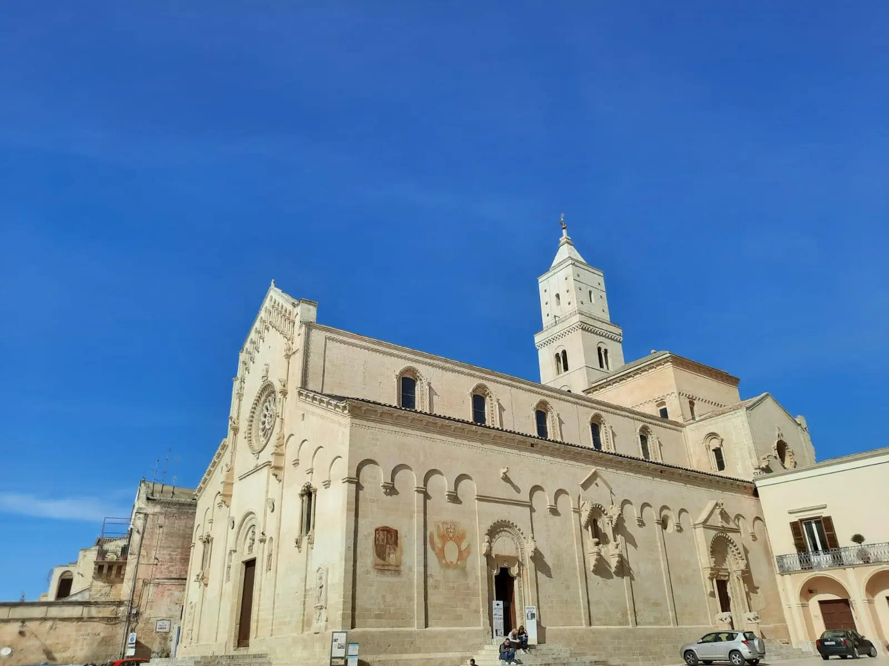
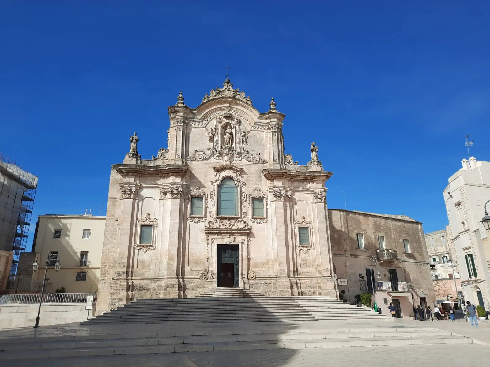
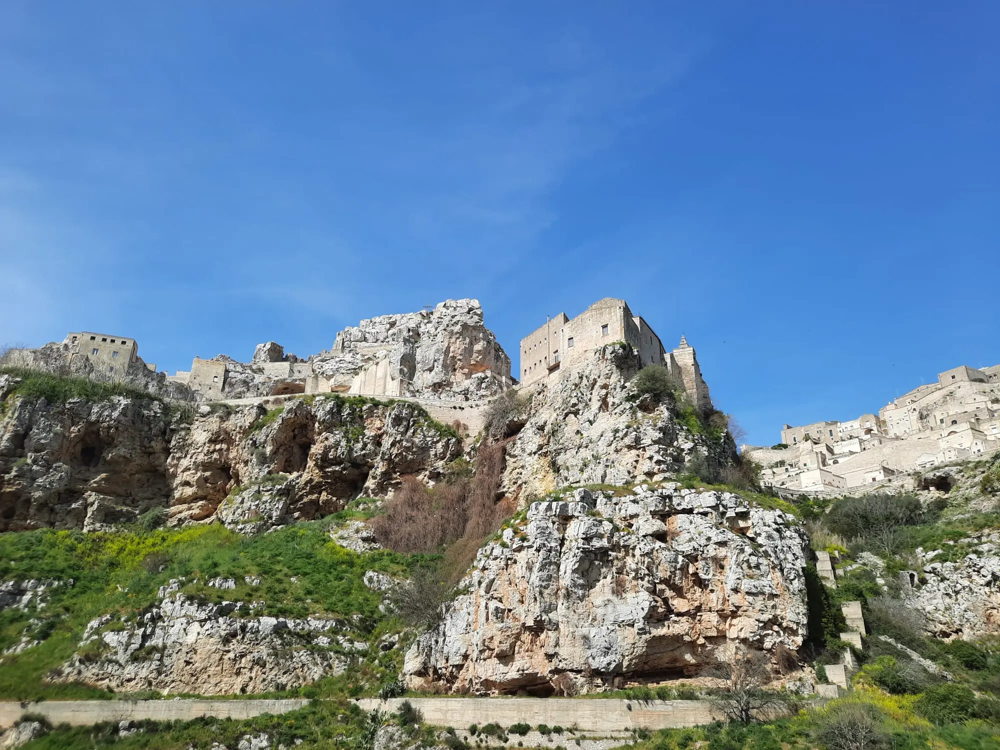
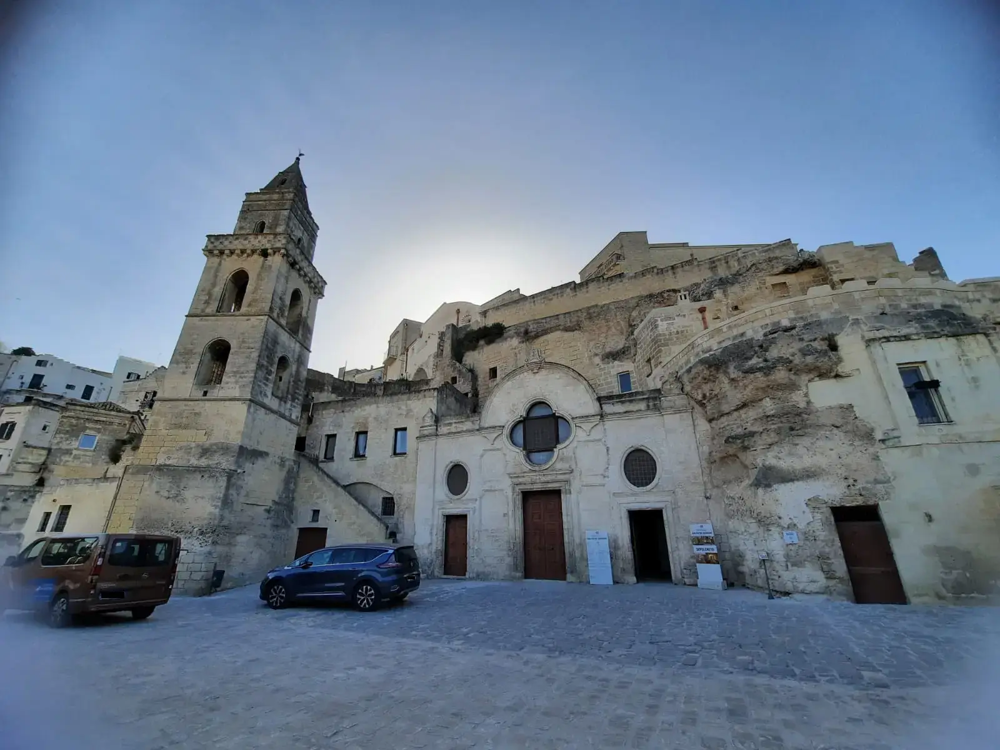
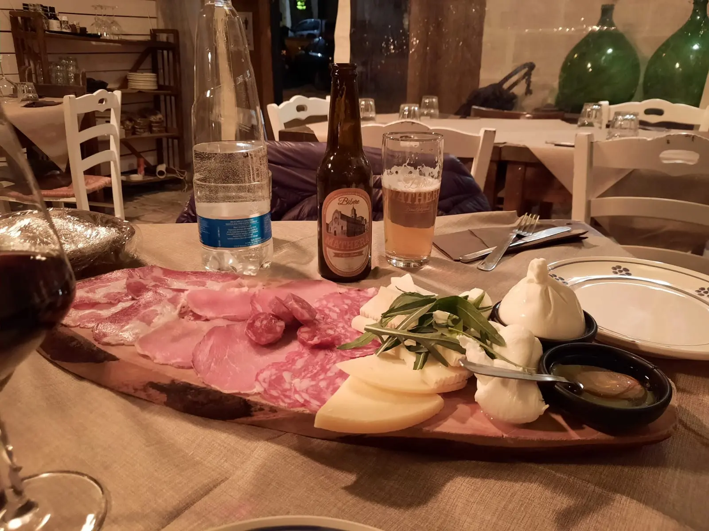
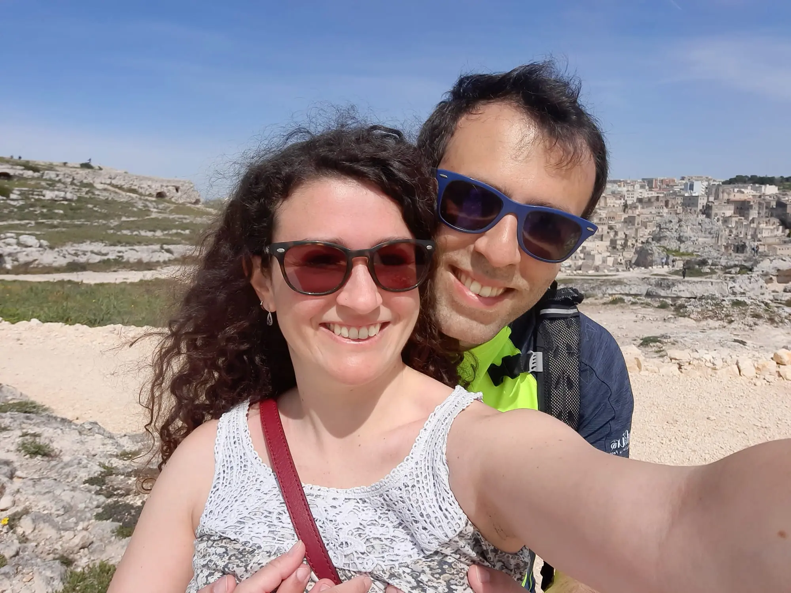

Matera: 2 Wonderful Days in the City of Stones
Ancient cave dwellings carved into rock, breathtaking landscapes, outstanding hospitality, and incredible food: this is Matera, one of the most unique destinations in Italy.
The Sassi of Matera are truly one of a kind-just like the experience Anna and I had during our Easter trip. This incredible place captured our hearts from the very first moment, and if you’ve never been, I highly recommend visiting as soon as possible.
Our 2-Day Itinerary in Matera
| Day | Plan |
|---|---|
| Day 0 | Flight to Bari → Overnight stay |
| Day 1 | Car rental → Altamura → Matera → Sasso Caveoso → Casa Grotta → Dinner |
| Day 2 | Murgia Park → Rock churches → Sasso Barisano → Dinner |
| Day 3 | Return to Puglia |

Matera by night
Save this guide for your next trip to Southern Italy - you’ll want to come back to it later!
Day 1: Sasso Caveoso & Casa Grotta
We arrived in Matera after picking up our rental car at Bari Airport and parking near Via Lanera. From there, we walked to our accommodation, the beautiful Sasso 19.52, passing the impressive Tramontano Castle and our first breathtaking panoramic view over the city.

Our cave stay in Matera

San Pietro Caveoso Church in Matera
Sleeping inside a cave dwelling was an unforgettable experience - something truly unique and worth trying at least once.
Understanding the Sassi
| Area | Description |
|---|---|
| Sasso Caveoso | The most scenic and authentic area |
| Sasso Barisano | More lively, with shops and restaurants |
| Civita | The historic heart between the two Sassi |

Casa Grotta in Matera
After settling in, we wandered through the narrow stone alleys before visiting the famous Casa Grotta. For just €5, we explored a traditional cave house with original 1950s furniture, a rock church, a natural cave, and an ancient snow storage room.
A Piece of History
The Sassi were inhabited from prehistoric times until the 1950s. In 1952, following a visit by Italian Prime Minister Alcide De Gasperi, the government launched a relocation plan to improve living conditions. This period was also described by Carlo Levi in his famous book "Christ Stopped at Eboli".

Matera Cathedral

San Francesco d'Assisi Church in Matera
After exploring the area, we visited the Cathedral and the Church of San Francesco d’Assisi, where we admired a surreal artwork by Salvador Dalí. We ended the day with a fantastic dinner at a traditional Lucanian restaurant, enjoying authentic local flavors.
Day 2: Murgia Materana Park & Rock Churches
The second day started with a walk through the stunning Murgia Materana Park, one of the highlights of the trip.
| Detail | Info |
|---|---|
| Starting point | Near San Pietro Caveoso |
| Duration | Around 1 hour (one way) |
| Difficulty | Easy to moderate |
| Tip | Wear trekking shoes |

Matera seen from Murgia Materana Park
The trail includes a suspension bridge over the Gravina stream and leads to a spectacular panoramic viewpoint overlooking the Sassi. Walking at a relaxed pace and stopping occasionally for photos, it took us about one hour to reach the top - and slightly less on the way back. The view from above is absolutely worth the effort.
Rock Churches to Visit
| Church | Highlight |
|---|---|
| Santa Lucia alle Malve | Most impressive, former Benedictine monastery |
| San Pietro Barisano | Includes underground burial area |
| San Giovanni in Monterrone | Simple but atmospheric |
| Santa Maria de Idris | Iconic rock setting |
San Pietro Barisano, located in Sasso Barisano, has a unique underground area once used for the decomposition of bodies - a practice reserved for priests. Let’s just say Anna wasn’t too excited about that part, so we didn’t stay long!

San Pietro Barisano Church, Matera

Cured meats and cheese platter in Matera
After some relaxing time back in our cave accommodation, we enjoyed another delicious dinner at a local trattoria. In the evening, we explored Matera by night, discovering new alleys and once again falling in love with the magical atmosphere of this city.
Final thoughts
Matera is truly one of the most unique places in Italy. The Sassi, a UNESCO World Heritage Site, are something you should see at least once in your life. Add to that the Murgia Materana Park, the rock churches, incredible food, and the unforgettable experience of sleeping in a cave - and you’ll understand why this destination is so special.

Anna and Ricky in Matera
Have you ever been to Matera? Share your experience in the comments!